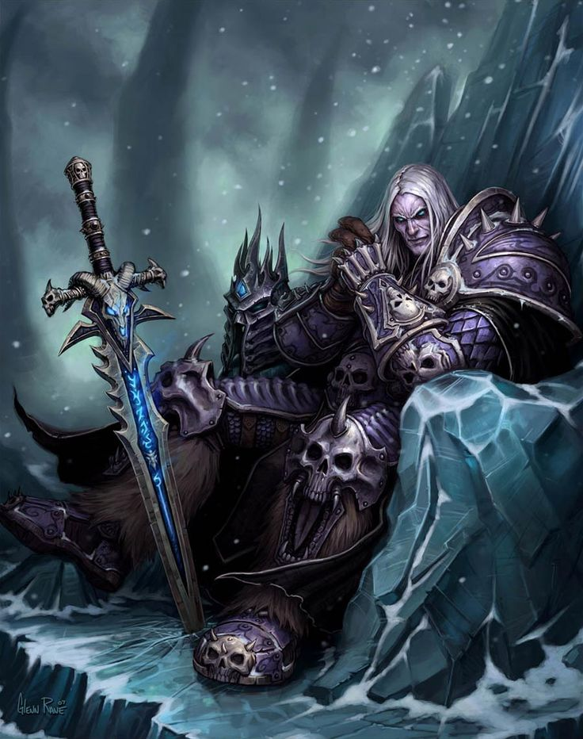
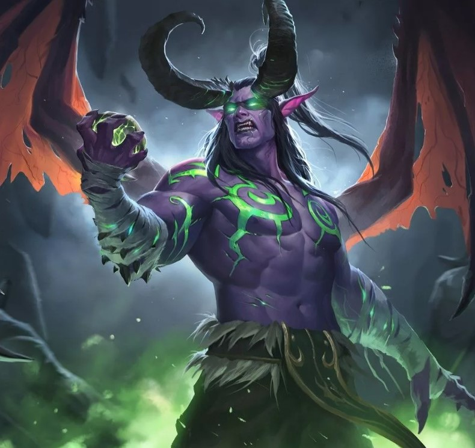
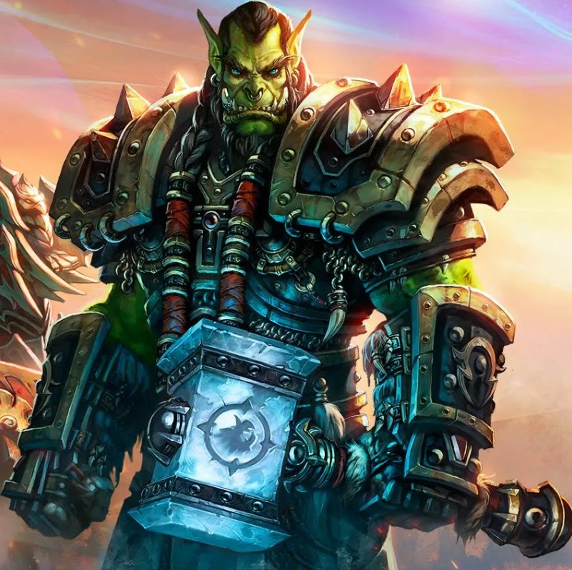
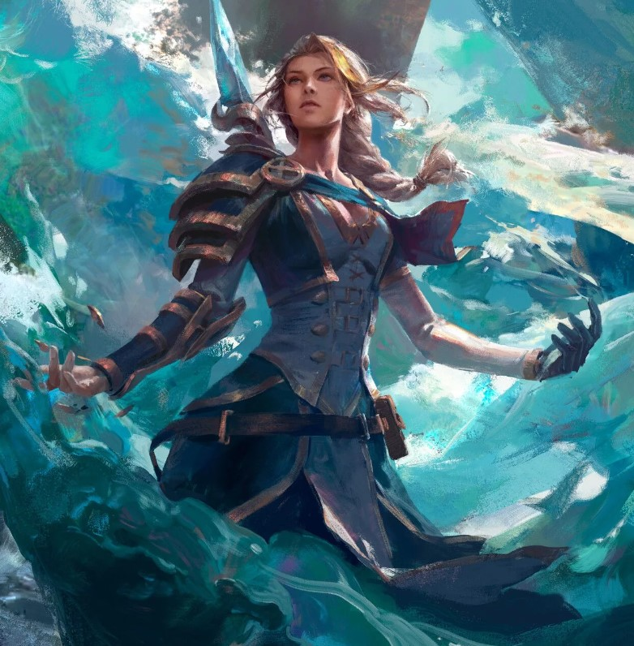
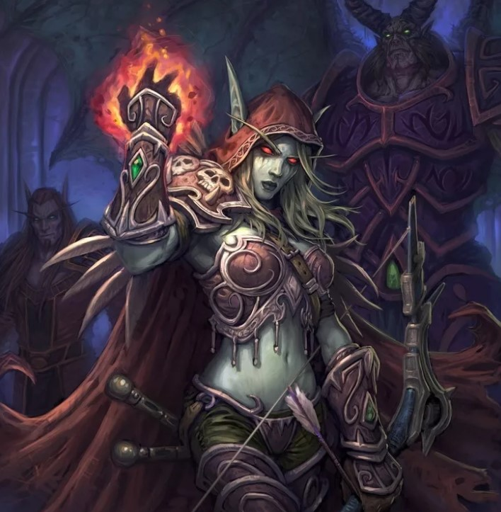

| Внешний вид | Персонаж | Раса | Класс | Описание |
|  | Артас Менетил | Человек | Рыцарь смерти | Артас Менетил — персонаж, известный как принц Лордерона. Вначале он был верным и преданным защитником своего королевства. Однако в ходе событий под влиянием Ледяной Короны и соблазна силы, Артас отверг свою прежнюю жизнь и стал Рыцарем Смерти, вторгшись в свою родную землю. Став причиной многих трагических событий, включая вторжение Лича, Артас сыграл ключевую роль в развитии сюжета Warcraft и в итоге стал одним из наиболее запоминающихся антагонистов в игровой вселенной. |
|  | Иллиядан Ярость Бури | Ночной эльф | Охотник на демонов | Иллидан Ярость Бури - выдающийся персонаж, ползущий по темной дорожке в поисках магической силы. Эльфийский воин и маг, Иллидан, стремясь к бесконечной магии, прибег к запретным исследованиям. Он совершил предательство Альянсу и Эльфам Ночи, что привело к его заключению. Освободившись, Иллидан поклялся мести и погружается в темные тайны, что приводит его к потрясающим событиям. Его стремление к магии и власти приводит к тому, что он становится демоническим охотником, поглощая даже часть демонической сущности. |
|  | Тралл | Орк | Шаман | Тралл, также известный как Громмаш Хеллскрим, — орочий вождь, один из наиболее влиятельных персонажей во вселенной. Родившийся в лагере военнопленных, Тралл был вырван из своей родной семьи и вырос в неволе. Ему удалось сбежать, и под руководством орчего шамана, Дуротана, он стал вождем и основателем Нового орчего ковена. Тралл играл ключевую роль в событиях во время второй войны и создании Орды, объединяя разрозненные орчие кланы. Тралл занимал пост Верховного вождя Орды, он также является шаманом и обладает сильными лидерскими и боевыми навыками, а его характер отличается силой, честностью и стремлением к миру между расами Азерота. |
|  | Джайна Праудмур | Человек | Маг | Джайна Праудмур - могущественная маг и выдающийся лидер в мире Warcraft. Изначально принцесса Куль-Тираса, она быстро стала одним из ключевых персонажей в событиях игровой вселенной. Джайна начала как сторонница мира между Альянсом и Ордой, но потеря своего отца в ходе второй войны привела ее к трагическим изменениям в ее взглядах. Ее персональные потери и трудные решения ведут ее к конфликту с Альянсом, особенно с ее решением атаковать город Терамор, контролируемый Ордой. Тем не менее, Джайна остается мудрой и могущественной фигурой, стремящейся к миру и справедливости. Ее история служит примером сложности выборов и последствий в мире Warcraft. |
|  | Сильвана Ветрокрылая | Нежить | Охотник | Сильвана Ветрокрылая — выдающаяся и таинственная фигура во вселенной Warcraft, правительница нежити и вождь Орды. Изначально высокоэльфийской рейнджершей, она пережила войну и потерю своего народа, что привело к ее превращению в нежить. Сильвана стала верховной леди Подгорода и вождем расы "Отрекшихся". Характеризуется сильной волей и стремлением к выживанию своего народа, Сильвана также обладает сложной моральной природой. Ее решения и действия вызывают споры и подчеркивают темные аспекты ее личности. В ходе событий Сильвана становится ключевой фигурой, влияющей на судьбу Орды и Азерота в целом. |